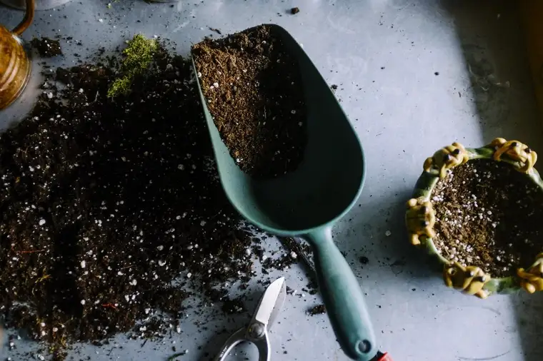

Long before the local news stories about the topic came out, we sidewalk advocates had been noticing some post-abortive women emerging from North Dakota’s only abortion-facility holding small potted plants.
We assumed these must be gifts from the facility or someone associated with them.
A recent article revealed that the plants, made by a non-profit that calls itself “Plants for Patients,” are meant to “soothe” the women who’ve had an abortion, and be a neutral gesture.
It sounds so nice, offering hurting women a little live plant made in a cute clay pot by someone who really cares, right? Well, maybe to those who haven’t yet thought through what abortion really is.
When I first discovered that women who’d lost their live baby by consent were given live plants for consolation, I immediately felt the emotional gut-punch that often follows the discovery of our culture’s deranged sense of things.
I’ve tried thinking about how this gift’s reception might play out in the days following the abortion. Given what we’ve learned from those who’ve shared about the real trauma that happens in abortion, we know the after-effects can be brutal.
Even if the woman doesn’t feel the repercussions immediately, and even forces a smile at the gift initially, imagine her bringing the plant to her residence and looking at it, day after day, always faced with a reminder of the life cut short.
I think that if it were me, I might be angry at the plant; that rather than it being a happy reminder, it would be like a hot poker stick jabbing at the wound that is still fresh.
I wonder if each time I would go to water the plant, I might realize in some guarded place inside that instead of holding my baby and feeling the joy of new life, I was holding only an inanimate object unable to hug me back.
What happens if the plants are ignored and die? Does that trigger the grief rolling around inside? Either way, wouldn’t that plant be a daily reminder of the life of a dead child?
The plants seem to go hand-in-hand with some of the other abortion promotions I’ve noticed lately. There are the billboards in Iowa and other places touting, “I had an abortion, and it was just healthcare,” and, “I had an abortion, and I am not apologizing.”
We’re also hearing from more women, from actresses to comedians, joining the “Shout Your Abortion” campaign to try and convince the public that the act of abortion is honorable, or no worse than a trip to the dentist’s office to have a tooth extracted. Lies. Just ask the women who’ve lived through and faced their abortions.
Even this local story is a deception. While claiming the nonprofit is seeking neutrality, partway through the piece, a name appears of one of the “neutral” sources, who also just happens to be a “pro-choice escort” for the facility, and complains of sidewalk advocates sometimes yelling at the women going in. Nowhere does it state that voices are sometimes raised because the escorts try to drown them out, so the women can’t hear the truth and receive real help.
It may be helpful to know that this escort is also a physics professor at NDSU, who leaves his classroom responsibilities almost weekly to help eliminate a classroom-size full of little ones. He also organizes sessions for those wishing to write messages of compassion to the women to be included with the plants.
The article quotes him as saying, “We try to focus on the strength of the individual… that they can feel love and support from the community.” In other words, to help them feel good about their abortion.
I’m glad the reporter also interviewed the prayer advocates, including Tom Regan, a pastor from rural Abercrombie, who commented, “There’s nothing they’re going to be able to say in that note to comfort her in the loss of her child.”
Ken Koehler of West Fargo remarked plainly, “My thoughts always go to what has just happened, for which that plant is being given. And what just happened is an innocent human life has been taken with every abortion.”
Lord, giver of all life—of both plants and people—have mercy on us all.
[Note: I write about my experiences on the sidewalk Downtown Fargo on Wednesday, the day abortions happen at our state’s only abortion facility, for New Earth magazine — the official news publication of the Fargo Diocese. I hope you find “Sidewalk Stories” helpful in understanding the truth about abortion and how it plays out tragically each week here in Fargo, N.D. The preceding ran in New Earth’s February 2019 issue.]